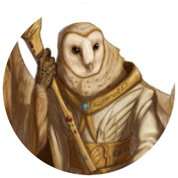

Ninguna gran historia estaría completa sin sus esos personajes secundarios que no acompañan esta nuestro viaje
-

Los tiefling de Zynamoor, codiciosos, ansiosos de poder y de trasender en las historia. La magia sera su espada,muchos lo han olvidados, pero han hecho cosas inimaginables para llegar a estar donde están
- 
Instalados en su monasterio, en la sima de la montaña de la península, se aislaron y desarrollan su arte con esfuerzo y dedicación. Basados en las tradiciones viven su vidas en paz, ignorando los horrores ajenos
-
Los poderosos Dwarf viven principalmente en Manarhum, se han instruidos en todas las artes que son dignas de ellos, la guerra y el combate, la tecnologia y las creacion, la comida, la bebida y la barberia. Es orgullo de un buen Drwaf servir a su reino y cumplir el tratado de los pequeños

Salvajes, esclavistas, sucios y viviendo en su barro, puede ser, pero orgullosos de eso, mejor barro que el que rodea a un Grung no hay y no va a haber. una sociedad simple dividida en casta según sus pigmentación
-
Los Maralha, una de las familias mas famosas y poderosas de todo el mundo. Uno no solo es Maralha debe convertirse en alguien digno de su apellido. Como la gran mayoría de las familias, o incluso mas, se odian entre si con todo su corazones (salvo excepciones)

Los humanos, la raza mas común de Anurem, los hay de todos tipos, se dedican a muchas cosas, casi todo puede su profesión, a diferencia de otros no acostumbran a especializarse en nada, pero como son tantos y hacen tantas cosas, siempre hay uno de ellos entre los mejores